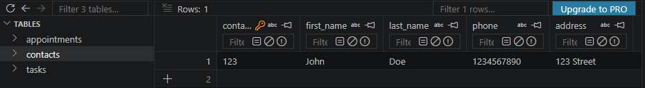
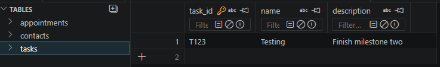
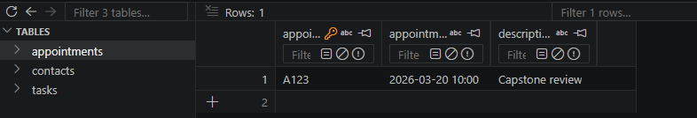
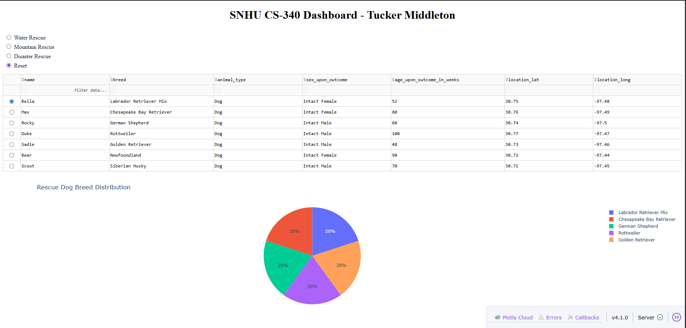
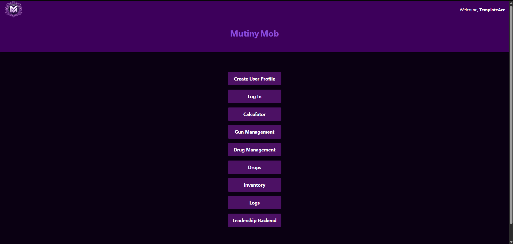
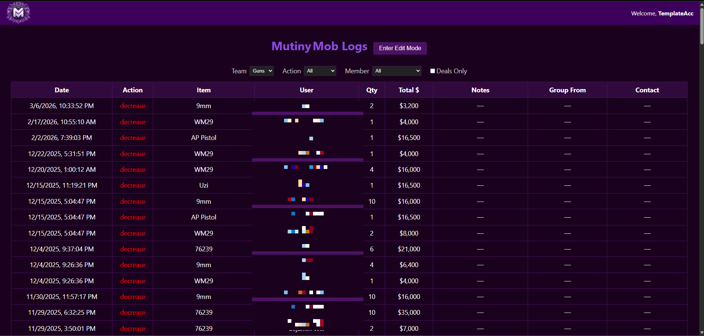
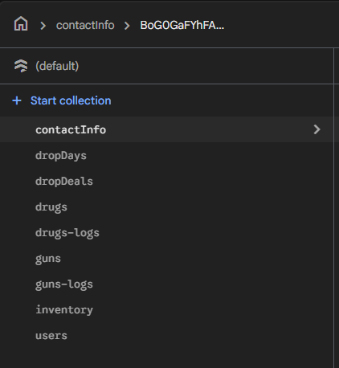

Welcome to my final ePortfolio for the Computer Science program at Southern New Hampshire University. This portfolio represents my technical growth across software design and engineering, algorithms and data structures, and databases. It includes original and enhanced artifacts, a code review, project narratives, and a professional self-assessment that reflects my development throughout the program.
The code review served as the foundation for my capstone enhancements. In this review, I analyzed the original state of my selected artifacts, identified weaknesses in structure, efficiency, testing, maintainability, and security, and explained the enhancements I planned to implement. This process supported collaboration and technical decision-making by clearly communicating the purpose of each artifact and the reasoning behind the improvements.
This artifact was selected for the software design and engineering category because it demonstrates my ability to improve an existing Java application into a more maintainable and professional system. The original project focused on object-oriented programming and service-layer logic. For my capstone enhancement, I refactored the application into a layered architecture using model, service, repository, exception, and database layers.
The enhanced version improves separation of concerns, maintainability, and scalability while preserving the original functionality. The project also uses Maven, JUnit, and SQLite to support testing, persistence, and cleaner software organization. This artifact demonstrates my growth in software architecture, validation, testing, and structured application development.

Contacts table with persistent SQLite storage

Tasks table showing database-backed records

Appointments table integrated into the application schema
This artifact was selected for the algorithms and data structures category because it demonstrates data-driven filtering, efficient query construction, and structured data processing in an interactive dashboard. The original project connected animal shelter data to a Dash-based interface with a data table, pie chart, and map.
For the enhancement, I centralized the rescue filter criteria into a reusable query structure and improved the project by supporting aggregation-style breed calculations closer to the data source. This reduced repeated filtering logic and made the application easier to maintain and scale. I also adapted the project for local development and testing when the original remote environment was not available.

This artifact was selected for the databases category because it allowed me to extend the same CS320 application into a stronger relational database solution. Building on the software engineering enhancement, I expanded the project into a multi-table SQLite application with structured relationships between contacts, tasks, and appointments.
The enhanced version demonstrates relational schema design, persistent storage, foreign key structure, indexed lookups, and secure prepared statements. These additions transformed the original project from a single in-memory application into a more realistic database-driven system and clearly demonstrate my growth in database design and implementation.
Parent entity in the relational schema
Task records associated with application data
Appointment records supporting structured persistence
In addition to my three primary capstone artifacts, I included the Mutiny Mob website as a supporting project to demonstrate a broader range of technical experience. This project highlights practical web development, user-facing design, backend integration, and structured data management in a real application context.
Mutiny Mob strengthens my portfolio by showing that my technical experience extends beyond academic enhancements and includes work with web interfaces, user workflows, application organization, and backend data management. While it is not one of my three required primary artifacts, it supports the overall depth and range of my ePortfolio.

Homepage and main navigation interface

Logs page showing application data and filtering

Backend collections supporting the application data model
My time in the Computer Science program at Southern New Hampshire University helped me strengthen both my technical abilities and my professional direction. Throughout the program, I developed experience in software design, object-oriented programming, algorithms, data structures, database development, testing, and technical communication. These experiences helped shape my specialization in data analysis and IT administration and gave me the opportunity to build skills that are directly relevant to my career goals.
The artifacts in this portfolio fit together as a representation of my overall growth. The CS320 software engineering enhancement shows my ability to improve architecture and maintainability. The CS340 dashboard demonstrates my ability to improve data processing and apply algorithmic thinking to a real-world style interface. The CS320 database enhancement demonstrates my understanding of relational database structure, persistence, and secure data access. Together, these artifacts show not only what I can build, but how I evaluate, improve, and present technical work in a professional setting.
In addition to technical skills, the capstone process also strengthened my ability to communicate clearly, organize a portfolio for different audiences, and connect coursework to real career goals. I also became more aware of the importance of validation, security-minded design, and maintaining systems that can evolve over time. This portfolio represents the strongest examples of my work and reflects the progress I made throughout the program.